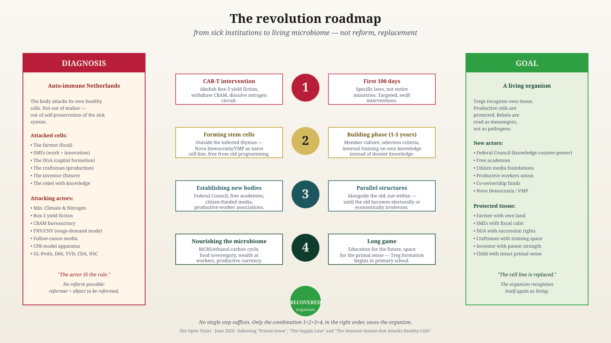

They Kill Their Lifeline
Brussels and The Hague have an anti-immune disease. The patient is called the Netherlands.
Jacobus van Merksteijn · 19 June 2026
They kill their lifeline — the production that provides the citizen with income.
No rhetoric. Three reports from this week.
15 June 2026
Dutch stables are being demolished and rebuilt in Poland, Sweden, Croatia, Peru, and Ukraine. Precisely the newest stables are leaving. They are worth the most.
16 June 2026
ESB calculates: the nitrogen buy-out policy costs €212,795 per kilogram. A kilogram of nitrogen in animal feed costs €1.50. The policy is 140,000 times more expensive than the problem.
12 June 2026
Rabobank: added value of agriculture –20% in one year. Fertiliser +26%. Energy +17%. Those who stay pay more for less.
One week. Three sectors of the same victim.
And the farmer is not alone. Owner-director: business succession taxed up to 70%. Box 3: tax on profit that does not exist. Industry: CBAM drives Tata, Nyrstar, and chemicals away. Craftsman: regulatory burden and VAT break the SME. Brussels: approves more buy-outs, blocks cultured meat, pushes CBAM through.
One leadership. Six sectors. One pattern.
The citizen has one lifeline: production. That is where the money comes from for healthcare, education, defence, the state pension. No production, no money, no society. Simple arithmetic.
That artery is now being severed by the leadership that lives off it.
And for what? For goals from 2019, in the climate of 2026. The plants have already moved. The tree line is shifting northward. Nature is adapting. The leadership is not. It buys out farmers using calculation models that reality has already overtaken. That is not stubbornness. That is the disease.
Why does nobody think?
How can this happen? Educated people. Advisers. Models. And yet this.
Genuine thinking requires three things.
Observing what is there. The sick leadership sees only its own models.
Doubting its own assumptions. In the sick leadership, doubt is betrayal.
Taking responsibility. In the sick leadership, responsibility lies nowhere — it came from the model, it was in the directive, it was mandatory under European law.
Whoever does not observe does not doubt. Whoever does not doubt does not decide. Whoever does not decide does not think.
That is why calls for "better policy" do not work. A non-thinking system does not think better because you ask it to.
The disease has a name
Medicine knows this. Autoimmune disease. The body attacks its own organs. Pancreas, joints, myelin, thyroid, gut.
The attacking cells are not malignant. They do their job. The problem lies in recognition. Own tissue is mistaken for the enemy.
The immune system cannot see its own error. Every attempt at correction is treated as a threat and neutralised.
Read that description again. Replace "body" with "the Netherlands". Replace "immune system" with "Brussels and The Hague". It fits word for word.
This is not a metaphor.
This is a clinical picture.
Left untreated it leads to death — in the human within years, in a country within a decade.
Why a new minister solves nothing
The cell line is sick, not the individual cell.
A new minister comes from the same university, the same career, the same models, the same committees. They cannot help but make the same decisions. The ministry produces them, not the minister.
In medicine this was understood long ago: broad immunosuppression — dampening the symptoms — makes the patient weak and dependent. Healing requires something else.
Remove the cell line and form a new one.

Five escalating treatment routes — medical and political side by side.
The treatment
Five medical routes. Five political translations.
1 · Suppressing symptoms
Subsidies, allowances, purchasing-power packages. Prolongs the disease. Makes the patient dependent on the attacker. Do not do this.
2 · Removing specific institutions
As CAR-T kills the wrong B-cell line. Concretely, this week:
- Lbv buy-out: stop.
- Box 3 fiction: gone.
- CBAM: withdraw.
- BOR reduction: reverse.
- AERIUS: start again, different premises.
Five decisions. One hundred days. Non-negotiable.
3 · Full reset
Constitution, electoral system, abolish ministries. Works — or destroys. Only if routes 2 and 4 are refused. Keep in reserve.
4 · New organs alongside the old
Not reforming the FNV — founding a productive workers' movement alongside it. Not arguing the CPB round — establishing a Bureau for Productive Future that does calculate BiCRS. Not pluralising the NOS — citizen foundations for media. Not adjusting the Senate — a Federal Council in which farmers, SMEs, skilled workers, and inventors hold seats.
Construction alongside demolition. The old becomes irrelevant on its own.
5 · The nutritional base
Own energy via BiCRS. Own food. Productive currency. Wealth with workers and SMEs. Without this nothing sticks.
The prescription
- Routes 2 + 4 + 5. Combination. In that order. Quickly.
- Route 1 consciously phase out. Whoever makes the patient dependent feeds the disease.
- Route 3 in reserve. Only if the patient actively refuses 2 and 4.

From diagnosis to goal — four steps, no more.
What if we do nothing
The course of the disease is documented. Other countries have already run it.
Productive people leave. Basic organs fail. Healthcare waiting lists grow. Defence cannot pay for itself. Capital follows the farmers to Poland.
Ten years. Then recovery is no longer possible.
To you
The leadership will not heal itself. An anti-immune system does not recognise its own error.
You do.
You are the farmer whose stable is moving to Poland. The owner-director whose succession has been made unaffordable. The SME owner whose bill is exploding. The employee whose wage is shrinking.
You are also the healthy counterforce. The Treg cell that can carry the recovery. But only if you wake up.
Acknowledge the disease. Name it. Demand the treatment. Do not wait for the patient.
They kill their lifeline.
Whoever reads this sentence and thinks "it can't be that bad" — has already gone along with the disease.
Whoever reads and knows what to do — is a Treg in the making.
Recovery begins with you.